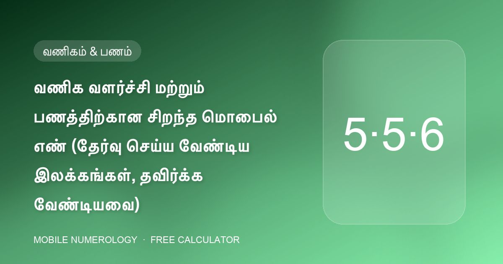

வணிக வளர்ச்சி மற்றும் பணத்திற்கான சிறந்த மொபைல் எண் (தேர்வு செய்ய வேண்டிய இலக்கங்கள், தவிர்க்க வேண்டியவை)

வணிக மொபைல் எண் அட்டைகள், பலகைகள் மற்றும் விலைப்பட்டியல்களில் அச்சிடப்பட்டு வாடிக்கையாளர்கள், சப்ளையர்கள் மற்றும் வங்கிகளால் டயல் செய்யப்படுகிறது. மொபைல் எண் கணிதம் அதை ஒரு பணக் கருவியாகக் கருதி, செல்வ மண்டலத்திற்கு — 8, 9 மற்றும் 10 இடங்கள் — மற்றும் அமைதியாகப் பணத்தைக் கசியவிடும் சில இலக்கங்களுக்குக் குறிப்பிட்ட வழிகாட்டுதல் தருகிறது.
வணிகத்தையும் பணத்தையும் ஈர்க்கும் இலக்கங்கள்
| இலக்கம் | எங்கே | விளைவு |
|---|---|---|
| 5 (புதன்) | 8, 9, 10வது | தொழில் வெற்றி, புகழ், வர்த்தகம் — 9 மற்றும் 10வது இடங்களில் சிறந்தது; 555 / 55 முடிவு ஏற்றது |
| 6 (சுக்கிரன்) | 10வது | "பணத்திற்கு சிறந்தது" — கடைசி இடத்தில் மிக வலுவான பண இலக்கம் |
| 3 (குரு) | 9, 10வது | வாய்ப்பு மற்றும் நம்பிக்கை |
| 7 (கேது) | 9, 10வது | இங்கே சிறந்தது — ஆலோசகர்கள், ஆராய்ச்சியாளர்கள், ஆன்மீக வணிகங்களுக்கு நல்லது |
| 9 (செவ்வாய்) | 1, 8, 9வது | தொடக்கத்தில் உந்துதல், முடிவு மண்டலத்தில் ஆற்றல் மற்றும் பொது நிலை |
பணத்தைக் கசியவிடும் இலக்கங்கள்
| இலக்கம் | எங்கே | விளைவு |
|---|---|---|
| 0 | கடைசி மூன்று இலக்கங்கள் | 000 இல் முடிவது வணிக இழப்பைக் குறிக்கிறது; 9/10வது இடத்தில் 0 சிந்தனையைக் குறைக்கிறது |
| 1 | 6–10வது | கடன் தொடர்பான பிரச்சினைகள்; 9/10வது இடத்தில் கூட்டாண்மைப் பிரச்சினைகள் |
| 8 | 10வது | நிதி இழப்பு மற்றும் கடன் — வணிக எண்ணை ஒருபோதும் 8 இல் முடிக்காதீர்கள் |
| 4 | எங்கும் | முழுவதுமாகத் தவிர்க்கப்படுகிறது; திடீர் தலைகீழ் மாற்றங்கள் |
கூட்டாண்மை வணிகங்கள்
4வது இடம் கூட்டாண்மையை ஆள்கிறது. அதை இரு கூட்டாளிகளின் பிறப்பு எண்களுக்குப் பகையான இலக்கங்களிலிருந்து விடுவித்து வையுங்கள், 9 மற்றும் 10வது இடங்களில் 1 ஐத் தவிர்க்கவும் — வகுப்பு அதைக் கூட்டாண்மை மோதல்களுடன் இணைக்கிறது. கூட்டாளிகளுக்கு வெவ்வேறு நட்பு எண்கள் இருந்தால், இரு அட்டவணைகளுக்கும் பேலன்சராக, அல்லது குறைந்தது ஒவ்வொருவருக்கும் நடுநிலையாக உள்ள கூட்டுத்தொகையைத் தேர்வு செய்யுங்கள்.
நோக்கம் சார்ந்த பின்கள் மற்றும் கடவுச்சொற்கள்
ஃபோனின் மற்ற பகுதிகளையும் ஒத்திசைக்கவும். வகுப்பு வணிக வளர்ச்சிக்கு 1569 மற்றும் 5559 (இரண்டும் கூட்டுத்தொகை 3), பண ஈர்ப்புக்கு 13467 (கூட்டுத்தொகை 3) மற்றும் செழிப்புக்கு 1668 (கூட்டுத்தொகை 3) ஐப் பட்டியலிடுகிறது. கடவுச்சொற்களுக்கு, கூட்டுத்தொகை 5 (LAXMI, LOTUS, NEELAM) தொடர்பையும் பணப் புழக்கத்தையும் ஆதரிக்கிறது, 9 (HANUMAN, VISHNU) உணவகங்கள் மற்றும் ஆற்றல்மிக்க வர்த்தகங்களுக்குப் பொருந்துகிறது.
ஒரு மாதிரி "பணம்" டெம்ப்ளேட்
பிறப்பு எண் 1 வணிக உரிமையாளருக்கு: முதல் இலக்கம் 8 தவிர எதுவும்; 7வது இடத்தில் அமைதியான 6; பின்னர் 8–10 இடங்களில் 5-5-6 அல்லது 5-5-5, கூட்டுத்தொகை 1, 2, 3, 5, 6 அல்லது 9 ஆகக் குறைய வேண்டும். எங்கள் ஆய்வாளரின் "இடவாரியான சிறந்த இலக்கங்கள்" அட்டவணை உங்கள் சொந்த எண்களுக்கு இந்த டெம்ப்ளேட்டைத் தானாக உருவாக்குகிறது.
அத்தகைய எண்ணை எங்கே வாங்குவது
555, 55 அல்லது 6 முடிவுகள் கொண்ட எண்கள் ஆபரேட்டர்கள் (Jio, Vi, Airtel) மற்றும் numberwale.com, numberspoint.com, vipnumbershop.com, vipfancynumber.com, fancywala.in மற்றும் lifetimenumber.com போன்ற சந்தைகளால் VIP அல்லது ஃபேன்சி எண்களாக விற்கப்படுகின்றன. கடைசி மூன்று இலக்கங்களால் தேடி, பணம் செலுத்தும் முன் வேட்பாளர்களை ஆய்வாளரில் ஒட்டுங்கள்.
30 வினாடிகளில் உங்கள் எண்ணைச் சரிபார்க்கவும்
எங்கள் இலவச கால்குலேட்டர் உங்கள் மொபைல் எண்ணின் 10 இடங்களையும் ஆய்வு செய்து, உங்கள் பிறப்பு & விதி எண்களைக் கண்டறிந்து, அதிர்ஷ்ட பின், கடவுச்சொல், வால்பேப்பர் மற்றும் கவரைப் பரிந்துரைக்கிறது — நீங்கள் உள்ளிடுவது எதுவும் உங்கள் உலாவியை விட்டு வெளியேறாது.
அடிக்கடி கேட்கப்படும் கேள்விகள்
பல 5 கள் உள்ள எண் வணிகத்திற்கு நல்லதா?
கடைசி மூன்று இடங்களில், ஆம். 5, 6 மற்றும் 7வது இடங்களில் 5 ஐத் தவிர்க்கவும், அங்கே அது குடும்ப மண்டலத்தைக் குழப்புகிறது, கூட்டுத்தொகை உங்கள் பிறப்பு எண்ணுக்கு நட்பாக இருப்பதைச் சரிபார்க்கவும்.
வணிக எண் உரிமையாளருக்குப் பொருந்த வேண்டுமா அல்லது நிறுவனப் பெயருக்கா?
மொபைல் எண் கணிதம் உரிமையாளரின் பிறந்த தேதியிலிருந்து வேலை செய்கிறது, ஏனெனில் உரிமையாளர் ஃபோனைப் பயன்படுத்துகிறார். நிறுவனப்-பெயர் எண் கணிதம் தனி நடைமுறை.
என் வணிக எண் 000 இல் முடிகிறது — இப்போது என்ன?
வகுப்பு கடைசியில் மூன்று பூஜ்ஜியங்களை வணிக-இழப்புக் குறிகாட்டியாகக் கொடியிடுகிறது. சில மாதங்களில் வாடிக்கையாளர்களை 55, 555 அல்லது 6 இல் முடியும் புதிய எண்ணுக்கு மாற்றக் கருதுங்கள்.